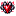

ESTADO DEL EVENTO
FASE 2 · SUPERVIVENCIA
End y Doom desbloqueados · la presión aumenta
Desliza para comenzar
Las fases las controla manualmente el Administrador. La guía cambia de intensidad y desbloquea contenido según FASE_PUBLICA.

Al morir pasarás a Espectador y no podrás continuar hasta ser revivido. Tu inventario se conserva, pero tu equipo queda fuera de la partida mientras sigas muerto.

Los enemigos derrotados entregan ScuadCoins. Llévalas a las tiendas para comprar suministros o deposítalas en el Banco para tener una reserva segura.

El Nether, el End y la Dimensión Doom no están disponibles desde el inicio. Cada acceso se abre cuando el Realm alcanza su fase correspondiente.

Las coordenadas y la regeneración natural están activas. Los mobs no pueden destruir o alterar tus construcciones mediante griefing.
En la esquina superior izquierda se muestra tu Banco. Cuando existe un desafío, bendición, cacería u otro evento temporizado, el HUD se amplía únicamente lo necesario para mostrar el tiempo restante.
Durante una Cacería PvP puede aparecer un jugador marcado. Su nombre se muestra junto al icono de Más Buscado; derrotarlo entrega 500 ScuadCoins y convierte al asesino en el nuevo objetivo. Si el objetivo actual sobrevive hasta el final, se lleva 500 ScuadCoins.
Algunos objetos especiales dejan una estela de color en su slot. Úsala como referencia rápida para reconocer equipo y consumibles importantes sin abrir sus detalles.
Deposita todas las ScuadCoins que lleves encima o retira únicamente la cantidad que necesites. Lo depositado permanece guardado aunque mueras.
Provisiones para mantenerte con vida. Su catálogo crece conforme se revelan nuevas fases.

Compra pociones de emergencia y alquimia avanzada. Las opciones más poderosas se desbloquean con las fases.
Intercambia riqueza por recursos especiales: Almas de Jugador, tótems, Perlas de Ender y experiencia.
Usa 1 Alma de Jugador para devolver a un compañero desde Espectador. El jugador revivido aparecerá junto a la fosa.
Progresión ordenada: cada grupo reúne los objetos que empiezan a formar parte de la progresión en esa fase. Las fases futuras permanecen clasificadas hasta que el Administrador las revele.
Equipo base, economía y supervivencia inicial.
Moneda física del Realm. Se obtiene principalmente derrotando enemigos y completando eventos.
Llave de resurrección. Compra una en la Urna de Oro y llévala a la Fosa de Almas para recuperar a un compañero. En el endgame también funciona como plantilla de herrería para crear el Filo del Horizonte Roto.
Comida de emergencia que estabiliza tus heridas con absorción y una breve regeneración.
Movilidad, escape y recursos para el Nether.
Velocidad III durante 20 s y Resistencia I durante 10 s. Ideal para romper una emboscada y ganar distancia.

Invisibilidad y Velocidad II durante 15 s, además de Caída Lenta durante 10 s.

Prisa II y Visión Nocturna durante 2 minutos, más Resistencia al Fuego durante 30 s.

Provisión compacta para expediciones; se vende en paquetes de dos desde Fase 1.

Consumible de movilidad y exploración pensado para rutas peligrosas y retirada rápida.
Consumibles avanzados para End, Doom y combates prolongados.

Fortalece tu vida temporalmente y acelera la recuperación durante unos segundos.

Absorción IV durante 2 minutos y Resistencia II durante 1 minuto.

Comida avanzada para expediciones de Fase 2, pensada para sostener combates y exploración prolongada.
Curación y defensa para amenazas de alta presión.

Limpia veneno, wither, debilidad, lentitud, ceguera, oscuridad, hambre, fatiga y náusea; después aplica Regeneración II.

Restaura toda tu salud inmediatamente y añade Regeneración III durante 10 s.

Preparado defensivo de alto nivel para aguantar asedios, Doom y jefes en fases avanzadas.
Consumibles de poder extremo para encuentros de élite.

Aumento de Salud III durante 2 minutos y Fuerza II durante 30 s. El precio del poder es una breve Oscuridad.

Fuerza III y Velocidad II durante 30 s, a cambio de Hambre III durante 15 s.
Recursos finales para el cierre del evento.

Absorción IV y Resistencia I durante 2 minutos, además de Regeneración II durante 30 s.
La mejora vanilla a Netherite está restringida. Las piezas de armadura usan las almas de los jefes como plantillas de herrería; la espada y las herramientas no pueden saltarse la progresión con la plantilla vanilla.

La entrega el Ghast Infernal. Funciona como plantilla para el casco de Netherite y vuelve a ser necesaria para ascender el Yelmo de la Perdición al Horizonte Roto.

La entrega el Giga Slime. Funciona como plantilla para la pechera de Netherite y vuelve a ser necesaria para ascender la Coraza de la Perdición al Horizonte Roto.

La entrega el Emperador. Funciona como plantilla para las grebas de Netherite y vuelve a ser necesaria para ascender las Grebas de la Perdición al Horizonte Roto.

La entrega el Devastador Espectral. Funciona como plantilla para las botas de Netherite y vuelve a ser necesaria para ascender las Botas de la Perdición al Horizonte Roto.
Espada de Netherite: la mejora vanilla con Plantilla de Netherite está bloqueada en el evento. Puede obtenerse mediante el botín autorizado de SR, incluyendo determinados jefes y cofres de alto nivel del Doom, y después sirve como base para fabricar la Espada de la Perdición.
Abre el menú de expedición a la Dimensión Doom. También puedes abrirlo con /scuad:doom.

Recurso raro de las expediciones. Puede aparecer en botines del Doom y es esencial para fabricar objetos de alto nivel.

Material necesario para transformar una pieza de Netherite en Armadura de la Perdición.


Mejora cada pieza de Netherite usando un Catalizador del Cataclismo. El set completo es irrompible y otorga Fuerza, Resistencia II, Resistencia al Fuego, Visión Nocturna y 5 corazones extra.

Espada irrompible de 12 de daño base y encantabilidad 18. Es el arma del conjunto Perdición y sirve como base para el Filo del Horizonte.
Recompensas de expedición
Cada 12 enemigos derrotados dentro del Doom recibes 20 + fase×8 ScuadCoins y suministros de expedición. Los cofres pueden contener Coins, diamantes, Netherite, Fragmentos de Eco, Núcleos del Doom y otros objetos raros.
Los jefes fueron balanceados para convivir con armas de alto DPS. Las armas de Improvised Guns tienen control anti-ráfaga sobre jefes para evitar eliminaciones instantáneas, sin alterar el daño normal de espadas y equipo vanilla.
Jefe gigante de presión cuerpo a cuerpo.
Combatiente de Netherite, resistente y agresivo.
Jefe aéreo de fuego con cadencia ofensiva reforzada.
Jefe espectral pesado con persecución terrestre mejorada.

Jefe de Fase 5 con segunda fase, esbirros, regeneración y grietas del Umbral. Es la prueba previa al equipo Horizonte.
Los jefes entregan 55 + fase×15 Coins más un extra aleatorio, esmeraldas y probabilidades de botín raro. Dentro del Doom existe además una bonificación independiente.
Guardias Doom, hostiles adaptativos y variantes especiales tienen recompensa propia.

Material de ascensión que se habilita después de vencer al Coloso del Umbral. Se fabrica de uno en uno para que cada mejora requiera su propio fragmento.


Mejora cada pieza de Perdición en la mesa de herrería usando el alma correspondiente como plantilla y un Fragmento del Horizonte como material de adición. Hereda Fuerza I, Resistencia II, Resistencia al Fuego y Visión Nocturna; añade Velocidad I, Salto II y 10 corazones extra.

Ascensión de la Espada de la Perdición: 16 de daño base, irrompible y con encantabilidad 22.
En Fase 5, usa un Catalizador en el End para despertar la variante final de la Dragona: escudos en 75/50/25%, meteoros, refuerzos, oscuridad y mayor resistencia contra ráfagas.
Con la integración de Nameless activa, usar el Terminus dentro del Doom después de haber derrotado a Nameless inicia el evento final: Tier 1 Vanilla → Tier 2 SR → Tier 3 Nameless Deity.
Si estás muerto y en Espectador, abre una lista de jugadores vivos para seguir su aventura mientras esperas una resurrección.
Abre el menú para entrar o salir de la Dimensión Doom una vez que la Fase 2 esté revelada.
Fase actual: 2 — Supervivencia. Los cambios son acumulativos: cada fase conserva reglas anteriores y añade nuevas amenazas. El avance lo controla manualmente el Administrador; esta guía no depende de días fijos.
Preparación absoluta antes de que empiece la escalada.
Comienzan las mutaciones ligeras y se abre el primer frente dimensional.
El evento entra en Difícil y se abren las dimensiones de progresión avanzada.
El mundo empieza a forzar peleas rápidas, visión reducida y asedios más serios.
Las criaturas comunes empiezan a comportarse como élites y los errores cuestan mucho más.
Máxima presión del Realm y acceso al contenido de cierre.

Las ruletas automáticas usan un intervalo configurable por el Administrador. El rojo queda reservado para cambios de fase; los demás colores pueden activar desafíos, maldiciones, bendiciones, beneficios o PvP. El sistema evita solapar eventos activos.